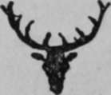
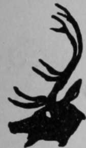

War Cry Of The Band
Description
This section is from the book "The Book Of Woodcraft", by Ernest Thompson Seton. Also available from Amazon: The Book of Woodcraft.
War Cry Of The Band
The Call or War Cry is something to be carefully considered. It is a great help if you get it right. The howl of a wolf as suggested by "Yow-w-w" is not the same as the howl suggested by the wolf itself. Go to some zoo where they have a lot of wolves and wait till you hear a real howl. Oftentimes one can start them by howling. If you cannot get a wolf to show you, listen to some big dog doing it; it is pretty much the same. Remember the Call was used as a signal when in the enemy's country. If it is done exactly right, the enemy think it is done by the animal not by the Scout. The friends of the Scout know it is he that calls because he gives it the right number of times or at the right intervals. Thus perhaps the Barred Owl Call is given three times and the reply to that is arranged to be the cry but once. If the answer is given three times to the three-times Call that would mean that the one answering was not a friend - it is either an enemy or the owl itself.
It is such a great help to get the Call just right that certain patrols have decided on a given Call, because that was one which they knew or could do.
For these reasons it is well to avoid foreign animals, etc. Nevertheless those who have taken such as "Kangaroo," "Cockatoo," and "Rhino," need not change them but rather adopt some call that will serve their purpose in our own country.
When it comes to such things as "Blue-Moon," "Echo," "Horseshoe," "Red-hand," etc., the Band can of course decide on any good yell, howl, whistle, squeak noise or call they like, only make it something peculiar and far-reaching. They should practise it only among themselves. Outsiders are not supposed to know it.
Remember then that the Calls and Totems given here are mere suggestions, you can take one of these (if it is not already in use in your town) or take any other bird, reptile, fish, animal or object that commends itself to you and is easy to draw.
In many of the Totems suggested no Call or War Cry is given. To supply this use any local yell or cry that your fellows can do or invent or make with two sticks, stones, or other apparatus.
BLUE BUFFALO.
1902. On white ground.
FLYING EAGLES. 1902.
Black and white on red. "Yek-yek-yek".
BLUE HERONS 1904. Blue on green. "Hrrrrr".
HORNED KINGBIRDS. 1902.
Black and white on pale red.
SINAWA. 1903. Black on red.
BLACKBEARS. 1906. Black on red.
AHMEEKS.
1909. Black on red. A loud "slap-plong.'
SILVER FOXES.
1904. Black on white.
RED TRAILERS. 1903.
Red on pale yellow.
MOON BAND.
1905. Yellow on blue.
OWENOKES. 1904.
Red with black lines on pale blue.
BLAZING ARROW. Red on pale yellow.
RAVEN. Black on red. Hroo-Hroo.
HOOT OWL. Black and yellow on green. Wa-ha-hoo-hoo.
OKOKOHOO or CAT OWL. Red and white on purple. Hoo-hoo-hoo.

SCREECH OWL. Dark red, white face on purple ground.
Whil-il-il-loo A soft quavering cry.
BLACK WOLF. Black on yellow or LOBO BAND; Gray on pink. Ya-hoooooo.
BLACK CAT. Black with yellow eyes on yellow ground.
Me-ow.
WOLF. Black on red for Wolves Brown on yellow for Brown Wolves. Red on pale blue for Red Wolves, etc., etc. Yew-w-w.
LYNX. Brown on gray. Brown on blue. Red on green. Yow-wow-wow.
FOX. Red on yellow for Red Foxes. Silver on gold for Silver Foxes.
Yap-yurrr.
WILD CAT. Gray or brown on tea green. Yah-row-row.
GRIZZLY. Brown. Grr-woof.
LITTLE BEAR. Black or brown on pale buff. Woof-woof.
FIREBOAT. Dark blue on pale green. A long whistle.

FLYING BLACK HAWK. Black on orange or red.
LOON. Black and white for Red Loon, Amber Loon, etc., on blue ground. A tremulous whooo.
THUNDER CANOE. Black or dark gray on pale blue.
A whistle then a bang.

BALD EAGLE. white and brown on yellow. Krek-krek-kay.
MUSTANG. Black Mustang, Red Mustang, and Wild Horse; on yellow ground.
A long neigh.
BLACK HAWK. Black on red. Kek-kek-kek.

BLUEHAWK. Blue on blood red. Indian warwhoop.
NIGHT-BIRD. Brown and whiteon pale blue-green.
Peabody-peabody-peabody whistled.
BUCKHORN. Black buck, etc., on pale green ground. A shrill, hissing whistle.

FORKED LIGHTNING. Red or yellow on blue-green. Fizz-bang.
THUNDER. Orange on black. Bang-rumble-boom.
BUCK. Purple on blue. A shrill whistle.
SEABIRD. Black and white. Kee-way-u.
SILENT BEAVER.
Brown on blue. No mouth - no cry.
SHUNKA-REELA. (running fox) Yellow and black on pale blue.
Yap-yahoo.
STING RAY. Green with black marks 01 pale red ground.
RED-GODS. Red on pale blue.
BADGER. white and black on yellow ground.
A rattling whistle.
BLAZING STAR. Yellow star - red tail - or blue.
WHOOPING CRANE white on blue ground-black wing.
Kah-roo, a trumpeted croak.
WOLVERINE. Black and pale brown on white.
Garoooo.
BLUE MOON. Pale blue on deep green. Any known night song.
RED-GODS. Red with black lines on pale blue.
COUGAR. Dark brown on pale blue. An awful yell.
ECHO BAND. Pale on dark blue. Ek-ho.
BUGLING ELK. Dark brown on rose red.
COYOTE. Brown and white on yellow. Yoop-yoop-yah-yow in ascending side like a coyote's bark.
FIRE-MOUNTAIN BAND. Blue mountain, red flames on black.
Yip-yip-yahoo-bang.
MOOSE. Black on pale green. A long smooth bellow.
FLYING EAGLE. white and brown on pale blue.
Kek-Kek-Kek.
white MOUNTAINS or SNOW PEAK BAND. White on dark blue. Rumble-shshsh.
CAT-IN-THE-NIGHT. Gray on black. Prow-row.
THUNDERBIRD. Dark blue on yellow, white head.
Lightning comes from his eye.
ARROW-FOOT. Red on blue field.
SUNRISE BAND. Yellow on pale blue. Call a loud Yo-ho, yo-ho, yo-ho on ascending notes.
MOHAWK. Black and red on olive green Indian whoop.
COON. Gray with black marks on a red ground.
A high pitched quavering Hoo-oo-oo-oo.
SUNSET BAND. Red or yellow on blue-green or pink.
A long descending whistle.
LIGHT HEART. Red on pale blue.
KINGSNAKE. Yellow with red spots, ground pale green.
SHINING MOUNTAIN. Dark blue semi-circle with white mountain.
WAR QUILL. white feather black tip and red tuft on yellow.
ARROWHEADS. Turquoise blue arrow on dark brown.
Ping.

FLYING PATROL or FLEET FOOT or WINGED HEEL. white on red.
YELLOW QUILL. All yellow with black tip on pale green.
THE SEVEN STARS. Pale pink on dark blue.

BLUE SKY Large blue circle on white.
OJIBWA. Orange on pale blue. Peace Whoop.
DEERFOOT. Yellow and black on blue-green.
Pat-Pal-Pat.
RED-HAND. Red hand on gray. Ho.
RED ARROW. Red on white. Zip-zip.
BLACKFOOT. Black and red War Whoop.
HORSESHOE. Blue on pale yellow. Clink-Clank.
SNAPPER BAND. Red on turquoise. Snap-ouch.
Continue to:
Tags
bookdome.com, books, online, free, old, antique, new, read, browse, download